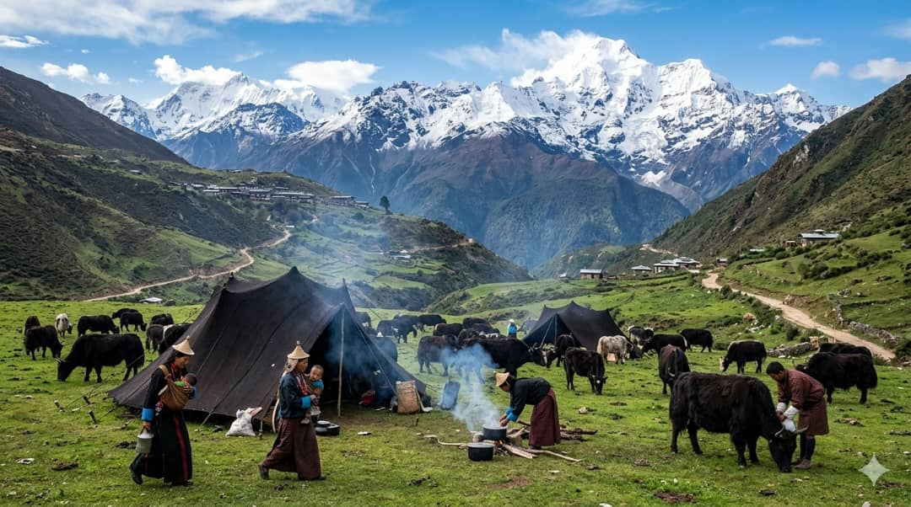
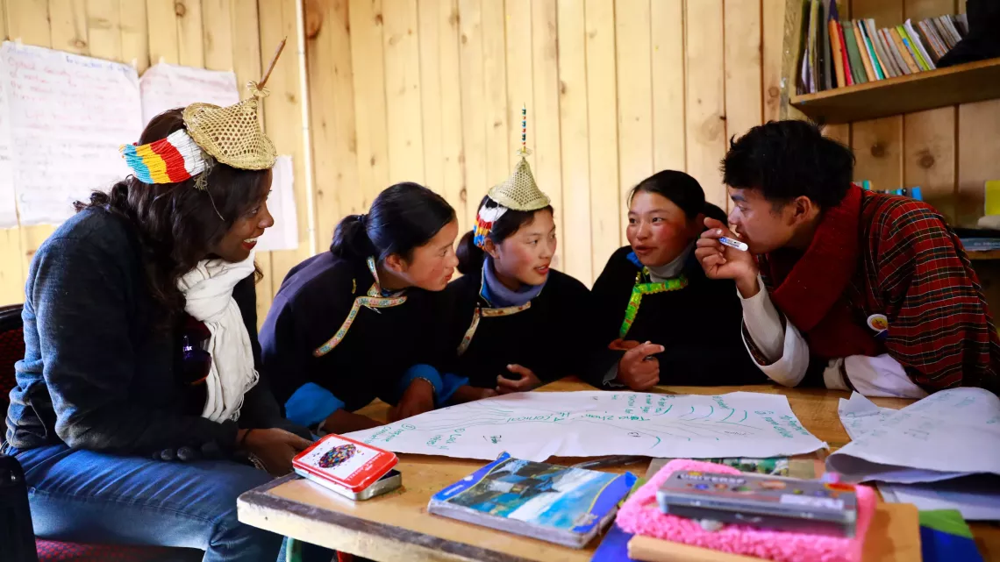

The Kira and the Gho — Wearing Identity
In Bhutan, national dress is not merely ceremonial — it is constitutionally mandated in public spaces and deeply personal in private life. The kira worn by women and the gho worn by men are woven with regional and clan identities that a trained eye can read like a language.
Highland communities like the Layap and Brokpa wear distinctive variations — the Layap women's conical bamboo hats and short jackets signal a cultural boundary that no map fully captures. These garments are made, worn, repaired and passed down as heirlooms of belonging.

The Sacred Calendar — Time as Cultural Practice
Highland Bhutanese communities organise their year around a sacred calendar of festivals, agricultural milestones, and protective rituals. The Tsechu — held annually at dzongs and monasteries — is not simply entertainment but a communal act of spiritual renewal.
Cham dancers in elaborate masks embody deities and demons, enacting cosmic stories that reinforce moral order. Attending these festivals is an assertion of identity: to be present is to belong. Absence, in some communities, carries social consequence.
"We do not perform our culture for others. We perform it for ourselves — to remember who we are when everything around us is changing."— Elder, Laya Village, 2023


Voices Carrying Centuries — Oral Heritage Under Threat
Many highland communities speak languages and dialects with no written form — Layakha, Brokkat, and Khengkha are among the most endangered. These languages carry within them ecological knowledge, relational ethics, and cosmological frameworks that cannot be translated without loss.
Oral storytelling traditions — sung histories, riddles, proverbs, and lullabies — are the primary archive of highland identity. When the last fluent speaker of a dialect passes, an entire way of understanding the world disappears with them. This project is committed to recording, preserving and transmitting these voices.

Between Two Worlds — Young People Navigating Tradition
Highland youth today stand at a crossroads. Smartphones, formal schooling, migration to urban centres, and exposure to global media are reshaping the ways young people understand themselves and their communities.
Yet many students from Royal Thimphu College who participated in this project returned from fieldwork changed — not by what they found strange, but by what they found familiar. The highlands, for many, represent a memory of identity that urbanisation had begun to blur. Culture, it turns out, is also a direction — not just a past.